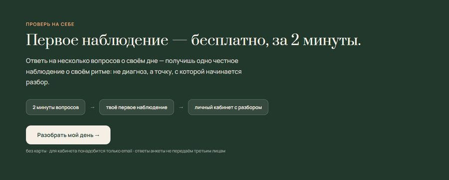
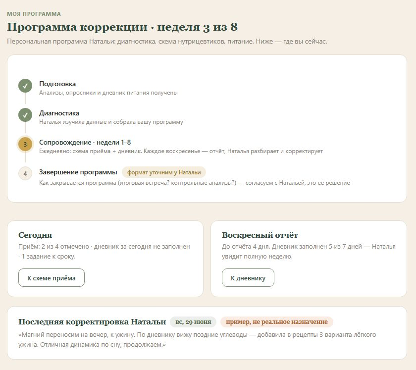
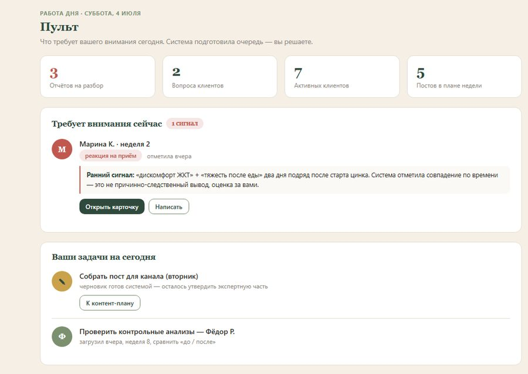

Это не презентация «как могло бы быть». Часть комнат уже построена — их можно открыть и покликать. На каждой двери честный ярлык: что уже существует, а что строим на внедрении.
Сейчас клиенты приходят волнами: запуск — всплеск — тишина. Машина устроена иначе: контент будет выходить регулярно, и каждый пост поведёт читателя на страницу «Один день» — прожить день вашего клиента и оставить заявку.

Главный ограничитель дохода — не спрос, а ваши руки: каждый клиент сейчас требует часов лично от вас. Машина забирает рутину (дневники, напоминания, черновики разборов) — и задумана так, чтобы та же неделя вмещала больше клиентов, а качество не падало.
Подвигайте ползунок — это модель, где видно, как ёмкость превращается в выручку.
Анкеты о здоровье и дневники — чувствительные данные. Закон (152-ФЗ) требует к ним особого отношения, и машина спроектирована под это с первого дня, а не «допилим потом».

Всё, что сейчас разбросано по чатам и папкам — программа, схема приёма, анализы, рецепты, — собирается в одном месте у клиента. Чек-отметки приёма, дневник с воскресным ритмом отчёта, напоминания — сами.
Вы не читаете сорок дневников подряд. Пульт собирает их сам и поднимает наверх то, что требует вашего взгляда: кто отклонился от схемы, у кого самочувствие пошло вниз, чей отчёт ждёт воскресного разбора.

Экспертиза и решения: программы, разборы, корректировки. Всё, что машина готовит, — черновик до вашей подписи. Ваше время уходит на клиентов, не на рутину.
Редактор-публикатор при фабрике контента: правит черновики под ваш тон и публикует. Доступа к данным клиентов и деньгам у него нет.
Строит и сопровождает машину: кабинеты, напоминания, сигналы, хранение данных в России, юридический контур — вместе с юристом.
Сроки и стоимость каждого этапа — предмет договора по этапам: обсуждаем на созвоне, двигаемся шагами, каждый шаг заканчивается работающей частью машины.